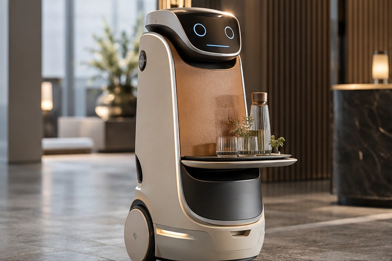

Robotics: an approachable outer layer
A robot’s surface is a designed interface between a machine and the people around it. Tactile coverings are developed alongside the housing and sensor system.
- Surface positions
- Outer housing, selected touchpoints and replaceable protective facings.
- Material questions
- Flexibility, coating wear, seam durability, repeated wiping, odour and attachment.
- Integration
- Keep sensor windows, airflow, joints and moving components clear. Evaluate how the covering changes the component response.
- Development scope
- Synthetic-leather concepts are not supplied as human-skin substitutes. Skin-contact use requires its own appropriate evidence.